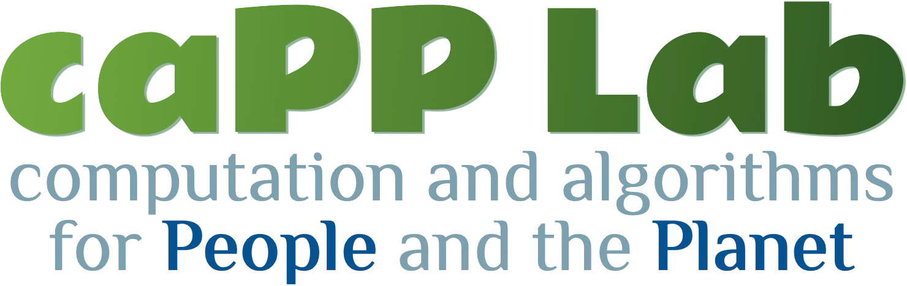

Advancing computation and algorithms to sustain people and the planet, with emphasis on people and the planet.
Led by Prof. Lily Xu, our research group at Columbia University develops AI methods across machine learning, optimization, and causal inference to tackle planetary health challenges, from biodiversity conservation to public health and disaster relief. Our work bridges rigorous theory with real-world deployment in partnership with NGOs, industry, and international organizations.
News
- July 2025Our group launched at Columbia!
Contact
Online
Office
Mudd Hall, office 312500 W 120th St
New York, NY 10027